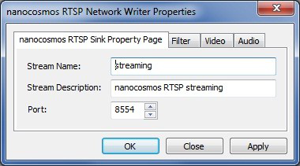

nanocosmos RTSP Sink Filter¶
Module / Version¶
nanocosmos RTSP Sink \ nRTSPSink.ax Version 1.1.1.0
nanocosmos RTSP Sink¶
- DirectShow filter for RTSP Streaming
- Supported Architectures: Microsoft DirectShow, Windows XP, Vista, 7, Server
- Supported Formats: H.264 + AAC
DirectShow Connectivity¶
The input is accepting connections matching the following media types: * Major types: * MEDIATYPE_Video * Subtypes: * FourCCs: H264, h264 * Formats: * FORMAT_MPEG2_VIDEO, * FORMAT_NONE
- Major types:
- MEDIATYPE_Audio
- Subtypes:
- MEDIASUBTYPE_AAC, FourCC: 0x000000FF
- Formats:
- FORMAT_WaveFormatEx,
- FORMAT_NONE
Configuration¶
The filter configuration may be set by using either the property page or the COM Interface IRTSPSink and as declared in header file RTSPWriterOptions.h . The streaming url can be set by using standard DirectShow interface IFileSinkFilter .
// Filter GUID
// {2ECDA33B-81FB-4467-96C9-BD53A9ED975F}
DEFINE_GUID(CLSID_NANO_RTSP_WRITER, 0x2ecda33b, 0x81fb, 0x4467, 0x96, 0xc9, 0xbd, 0x53, 0xa9, 0xed, 0x97, 0x5f);
// Property Page GUID
// {F387B72B-05AA-4016-8EC8-D6DA5DB36D23}
DEFINE_GUID(CLSID_NANO_RTSP_WRITER_PROPPAGE, 0xf387b72b, 0x5aa, 0x4016, 0x8e, 0xc8, 0xd6, 0xda, 0x5d, 0xb3, 0x6d, 0x23);
// Configuration Interface GUID
// IRTSPSink
// {F79C7B6E-E89E-415e-B3C7-A8E8BFA0278D}
DEFINE_GUID(IID_IRTSPSink, 0xf79c7b6e, 0xe89e, 0x415e, 0xb3, 0xc7, 0xa8, 0xe8, 0xbf, 0xa0, 0x27, 0x8d);
Configuration through DirectShow filter property page¶
The filter’s property page offers a subset of parameters, containing the most important options.

URL format:\ rtsp:%%//%%127.0.0.1:8554/streaming\ rtsp:%%//%%[ IP:port ]/[ stream name]\
Debug-Log Configuration Registry Settings¶
Key: HKEY_CURRENT_USER\Software\DebugNano\nRTSPSink.ax
File name¶
Sets the output file name. The folder must already exist.\ Value name: LogToFile\ Value type: REG_SZ / String\ Valid values: a valid output file name to enable file logging or an empty string
Logging level¶
A higher value increases the amount of logging messages sent, and messages get more detailed. \ Value name: TRACE\ Value type: REG_DWORD\ Valid values: * 0 - minimal logging * … * 9 - maximal logging